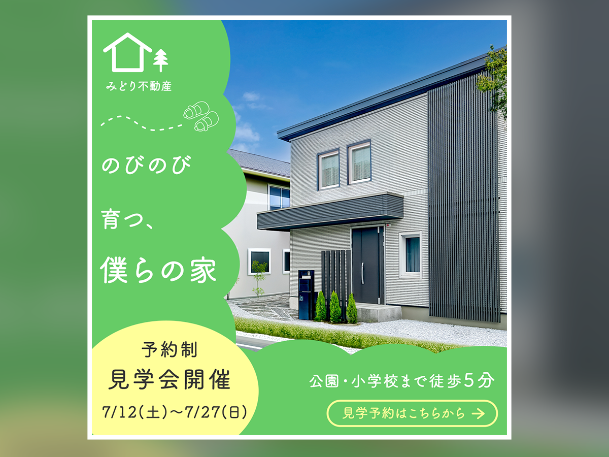

住宅見学会の告知を目的としたSNS広告を想定して制作したバナーです。 子育て世帯をメインターゲットとし、住まいの魅力と見学会の情報が一目で伝わるデザインを目指しました。
担当
企画・デザイン・制作
使用ツール
Adobe Photoshop
バナーの目的
住宅購入を検討している人に見学会の開催を知ってもらい、見学予約につなげることを目的として制作しました。
ターゲット
住宅購入を検討している子育て世帯を主なターゲットとしました。 安心して暮らせる住環境を重視する人を想定し、家だけでなく周辺環境の魅力も伝えられるよう意識しています。
デザインについて
住宅の写真を大きく配置し、住まいの印象が最初に伝わるレイアウトとしました。 全体はグリーンを基調とした配色でまとめ、自然や安心感を感じられる雰囲気を意識しています。
また、「公園・小学校まで徒歩5分」という生活環境に関する情報を掲載することで、子育て世帯が暮らしをイメージしやすい構成にしました。 見学会の開催日程と予約ボタンは下部にまとめ、必要な情報を順番に確認できるよう整理しています。
工夫した点
住宅そのものだけではなく、「ここで暮らすイメージ」が伝わることを意識しました。そのため、柔らかい曲線を取り入れたレイアウトや自然を連想させる配色を採用し、親しみやすい印象となるよう意識しました。 また、装飾を増やしすぎず住宅写真を引き立てることで、限られたスペースでも住まいの魅力や暮らしのイメージが伝わるよう工夫しました。